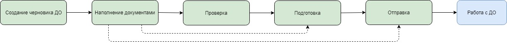

Порядок работы с черновиками¶
1. Создание
Начинается всё с создания черновика с помощью метода POST Draft.
2. Наполнение
Потом с помощью метода POST Document необходимо положить в черновик документы, которые хочется отправить в контролирующий орган. На этом этапе можно положить документы без подписей, если нужно просто проверить документы на соответствие форматам.
3. Проверка
Вызовом метода POST Check можно проверить все документы, находящиеся в черновике. Будут выполнены:
проверка на соответствие формату, то есть xml-файл документа проходит проверку по xsd-схеме;
проверки правильности контрольных соотношений согласно формату документа;
кросс-проверки между документами черновика, например, соответствие подписантов в доверенности и документе.
4. Подготовка
На этом этапе прячется подготовка контента документа к передаче в контролирующий орган.
У каждого типа контролирующего органа, документооборота и документа есть свои особенности в подготовке контента. Эти особенности регламентируются различными нормативными документами: какие-то документы надо сжать с применением определенного алгоритма, какие-то документы требуется зашифровать на определенные сертификаты, всё это сильно различается. Но пользователю API об этом знать не нужно, всё это спрятано за методом POST Prepare. На данном этапе обязательно наличие в черновике подписей под документами.
5. Отправка
После проверки и подготовки документов настает момент отправки, метод POST Send. На выходе метода создается документооборот — это можно считать моментом отправки документа в контролирующий орган. Далее идет работа с созданным документооборотом, все данные по нему будут в ответе этого метода.
Базовый сценарий предполагает последовательные вызовы методов создания черновика, наполнение его документами, проверки, подготовки и отправки. Но есть возможность не вызывать методы последовательно, а вызвать сразу подготовку и отправку, или только отправку. При этом стоит понимать, что под капотом всё-таки будут вызваны и предыдущие методы тоже. Например, вызываешь Подготовку, то Проверка вызывается автоматически перед ней. Вызываешь Отправку, а под капотом вызываются и Проверка, и Подготовка. Работа может завершиться на любом из методов, если тот вернет неудовлетворительный ответ. Таким образом, ни при каком условии мы не допускаем отправку непроверенных документов в контролирующий орган, тем самым минимизируем вероятность отказа в приеме документов.
Примечание
Черновик можно отправить только один раз. После успешной отправки черновик будет храниться в течение 1 года.